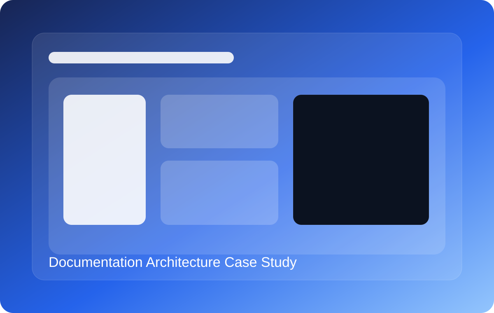

Case Study
Documentation Architecture Improvement Case Study
This sample shows how I approach documentation structure, user flow, and content discoverability when improving a product documentation center.

The problem behind the content
A software product has solid capabilities, but its documentation center has grown organically. New users struggle to find onboarding material, while experienced users have difficulty locating specific references and troubleshooting guidance.
User-side issues
- New users do not know where to begin
- Reference lookup is inefficient
- Troubleshooting content is buried
Structure-side issues
- Navigation reflects internal teams, not tasks
- Content types are mixed together
- Terminology is inconsistent
A clearer documentation model
- Get Started for onboarding and first success
- Guides for task-based workflows
- Concepts for product understanding
- API Reference for detailed endpoint and parameter lookup
- Troubleshooting for support-driven problem solving
- Release Notes for change tracking and migration awareness
Good documentation architecture improves experience before the user reads any specific paragraph.
Faster onboardingNew users can find their first path more quickly.
Better retrievalExperienced users can locate references and fixes faster.
Lower support loadClearer structure reduces repeated user confusion.
Why this matters for my profile
This case study reflects my interest in documentation systems, not just page-level writing. I care about how users move through documentation, where they get stuck, and how structure itself can improve product experience.